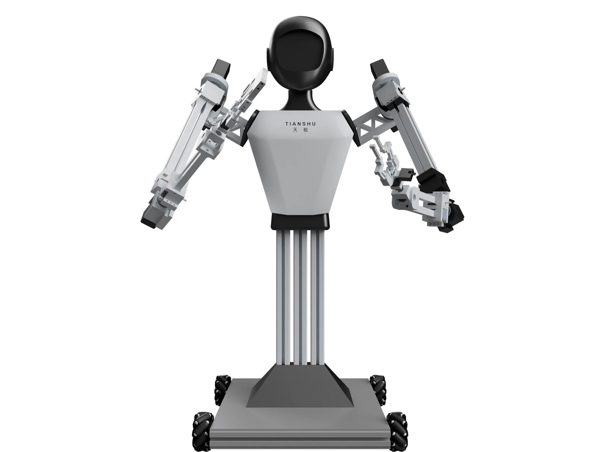
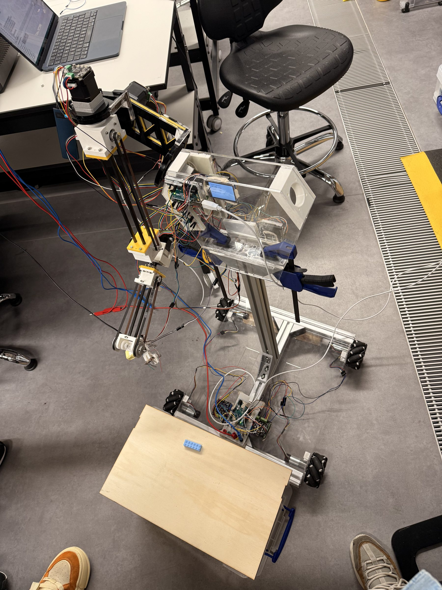
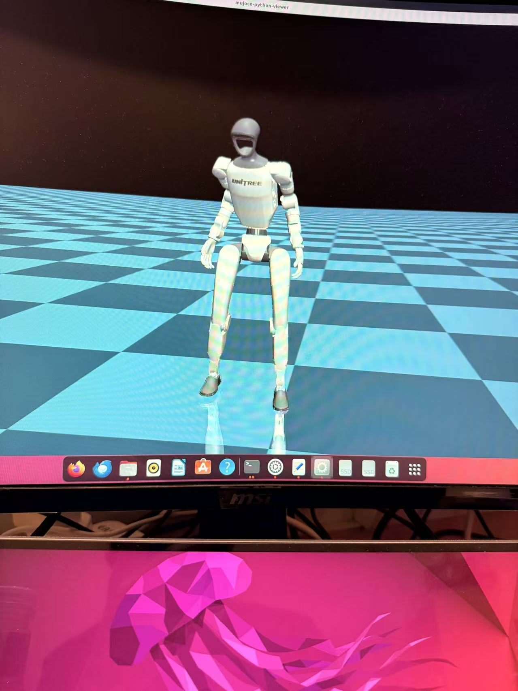
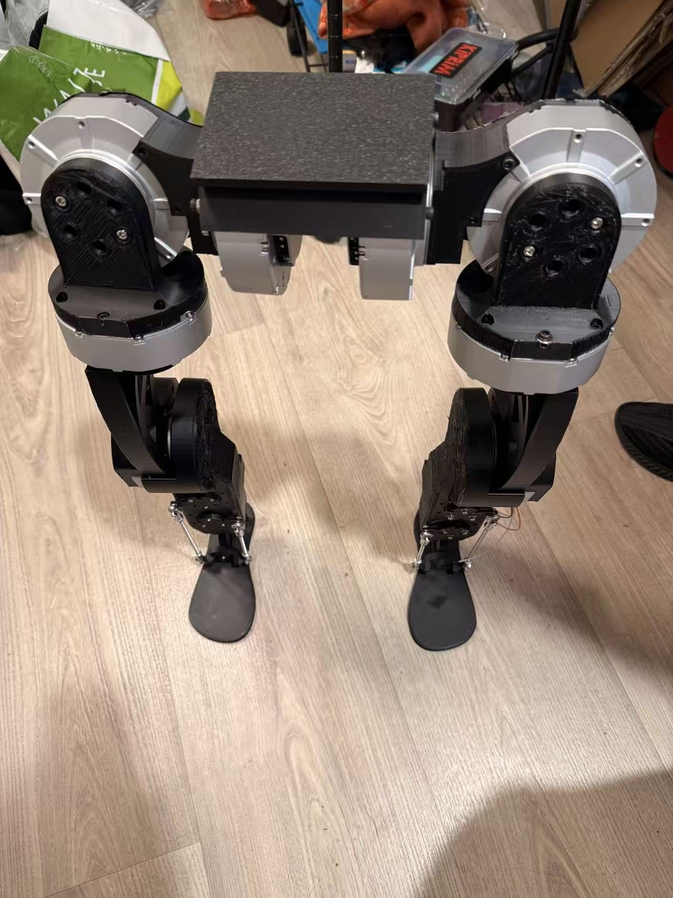

All projects
TianShu – Half Humanoid with Mecanum Wheels
A mecanum-wheel half-humanoid for industrial automation with dual 7-DOF arms and grippers, on-device YOLO on Nicla Vision and force / weight sensing for recognition, assembly and defect inspection.
Mar 2025
YOLO
Sensor Fusion
Integration
Designed and built a half‑humanoid robot mounted on mecanum wheels for industrial automation. Two 7‑DOF arms equipped with stepper motors and harmonic gearboxes provide dexterous manipulation. The system includes force and weight sensors, a Nicla Vision module running YOLO for object detection, and a real‑time display for human–machine interaction.
Highlights
- Mecanum‑wheel base provides full holonomic motion — translate and rotate independently in tight aisles.
- Two 7‑DOF arms with stepper motors + harmonic gearboxes — high reduction, low backlash, dexterous reach.
- Force and weight sensing on the grippers for closed‑loop assembly and quality checks.
- Nicla Vision module runs YOLO on‑device for object detection and defect inspection.
- Real‑time HMI display surfaces robot state, perception output and operator controls.
Skills & Technologies
- Mechatronics & System Integration
- YOLO Object Detection
- Path Planning
- Force / Weight Sensing
- Stepper + Harmonic Drive
- Mecanum Holonomic Base
Gallery



